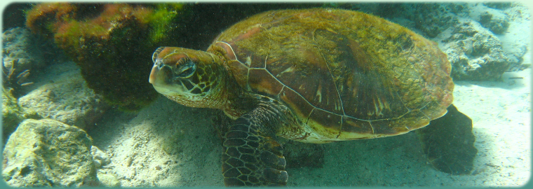

Contact
The original code was written and published by Dr. Marco Barden, Institute of Astro- and Particle Physics, University of Innsbruck
New contact for inquiries isDr. Boris Häußler
European Southern Observatories
Alonso de Cordova 3107
Vitacura, Santiago
Chile
Tel.: +56 22 463 3022
Email: BorisHaeussler.astro [at] gmail.com
Acknowledgements
This work would not have been possible without the help of several colleagues. In particular, we would like to thank Chien Peng for encouraging us to put it all together in an organised fashion and publish it, Dan McIntosh, Yicheng Guo and Cris da Rocha for beta testing and various people on the GEMS and STAGES teams for their support.
Photos from the islands of Galapagos are copyright by Stefan Gerber and were taken with kind permission from his website: Gerber's Fotialbum.
If you have found this code helpful for your research please cite our paper: Barden et al. (2012).
This page is optimised for resolutions wider than 800 pixel